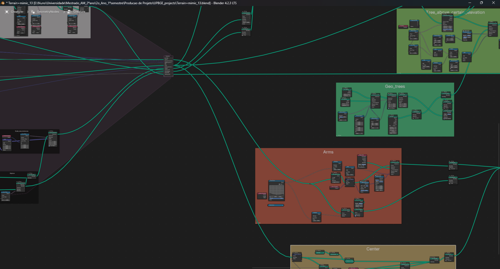
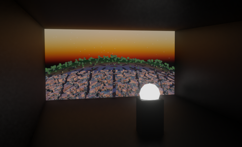
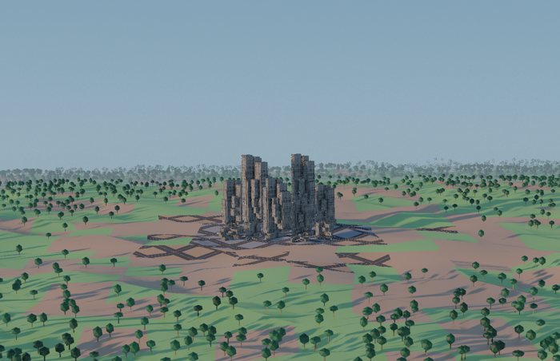
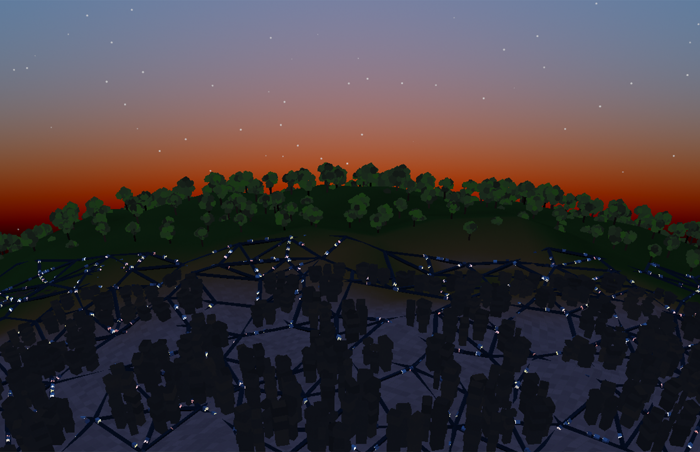
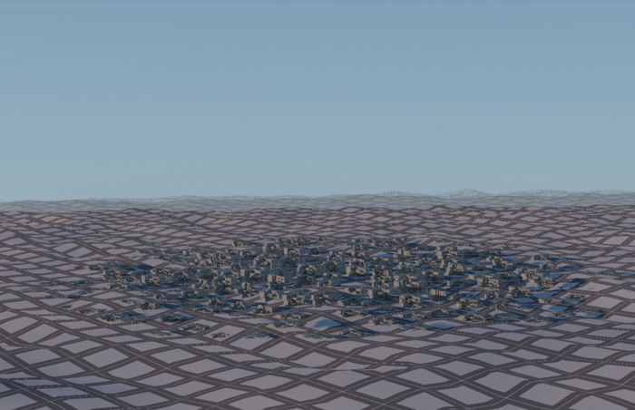
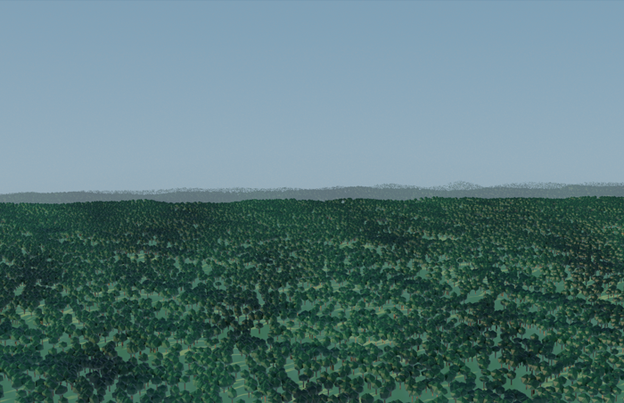

The Artistic Creation
of Interactive Landscapes
The project Exploring the Digital Horizon: The Artistic Creation of Interactive Landscapes aims to delve into the evolution and deterioration of the landscape. The perspective of this project is that the technique that is being used, procedural modeling, can give more prominence to the environments.
By using the qualities of procedural modeling, it is possible to increase the expression of the landscape, in an almost fantastic way, emphasizing the limits of this digital horizon, where artistic creation questions the medium and the referent, articulating questions about the impact of human activity in a world of finite resources and how this has repercussions on the landscape.


It is considered that interactivity can help to understand complex systems that exist in the formulation of urban and natural landscapes, combining the order imposed by the public and the chaotic ramifications of the simulation.
The project culminates with Game-Cities – Critical Simulations, Encapsulated Horizon and Towards a Digital Horizon, three interactive landscape simulations in which natural and urban structures grow and develop in real time. The digital artwork is developed as a living painting, in which the landscape evolves over time, in form and dynamism. The public can interfere by directing, like a god, the development of the landscape towards more beneficial or aggravated states.



It is essential to highlight that this investigation stems from an artist's perspective, intending not to provide solutions but to create a space that encourages reflection. The project assumes that interaction with a work, even if simulated in a virtual environment, can lead to a better understanding and exploration of the world, specifically the landscape. The landscape is recognized not merely as a visually represented space but as a living territory experienced sensorially, emotionally, and symbolically by individuals who inhabit or shape it.
Critical Simulations
The work Game-Cities - Critical Simulations - presents itself with green hills that stretch as far as the eye can see, populated by trees and perforated by urban structures that follow the movement of the computer mouse. The participant can expand the artificial or natural structures to the point where they eliminate one or the other. This interaction is accompanied by sounds alluding to the implied processes of destruction or repopulation.


This simulation was created with Blender's geometry nodes. Interactive components were add with UPBGE - Blender's game engine. Combining a proximity parameter with the generation of the urban structures allowed the interaction with the user's mouse. The mouse moves through the landscape, pulling the urban settlement along and even allows, with its clicks, to expand and retract the area of this community.
Using a distribute instances on points functions, cubes were spread through a grid and stack over each other in a fractal manner.
Trees were assembled with geometric primitives and randomly dispersed in the inverse area of the city
The terrain plane was deformed with a noise texture to simulate hills
Simple materials were assigned to the different shapes to add color to the scene.
The proximity parameter was connected to the material shader to inform the transition between grass, dirt and pavement textures.
The final composition was designed, with face atmospherics made with transparent planes, with some color grading and lighting
In Encapsulated Horizon, the simulation takes place around a dynamic and constantly evolving entity - an amalgam of industrial and urban structures, which grows and adapts, expanding to consume its environment, just like an organism. This digital work resembles a terrarium, housing a “creature” that grows and adapts, similar to an organism that expands to interact with its surroundings. The audience is invited to interfere in this development, taking on a role similar to that of gods who direct the creature's course towards more or less beneficial states.
In the interactive simulation Towards a Digital Horizon, the environment is transformed as the participant moves through the landscape. It's as if the shadow the participant casts scars the landscape. With each footstep, a little more flora is stepped on. Each step knocks down a tree. Each action transforms the world and can raise questions about what can be done and what kind of agency one really has. This project aims to address the traditional dichotomies between rural and urban, natural and artificial, shown here in profound transformations.
Toward a Digital Horizon journal article link - doi: 10.1007/s41133-024-00071-x
{kind=link}
{kind=link}
{kind=link}
{kind=link}
{kind=link}
{kind=link}
{kind=link}
{kind=link}
{kind=link}
{kind=link}